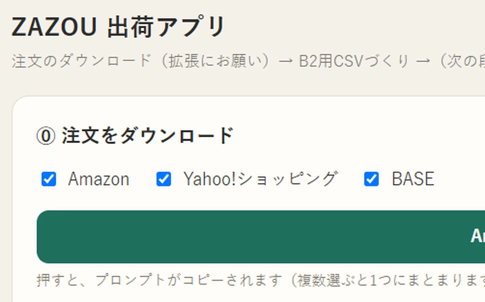
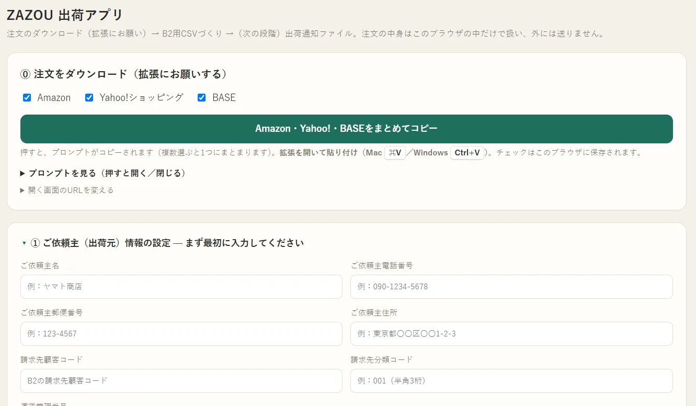
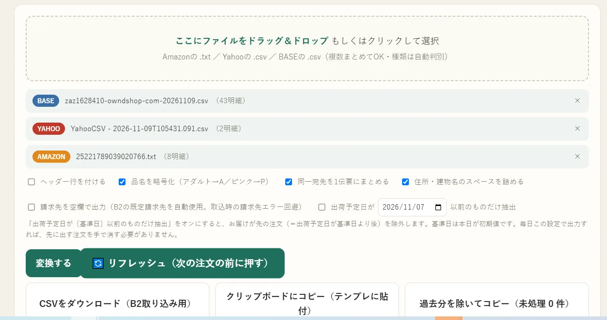

ZAZOU Lab ／ 仕事一覧 ／ 実績ZAZOU株式会社 業務改善エンジニア 松村貴士
ZAZOU AI Works
EC出荷作業を、
仕組みにする。
Amazon・Yahoo!・BASEの注文から
送り状まで
ZAZOU株式会社 2026年11月

EC出荷の自動化を、実際の画面で説明する資料です。
01 / 10これまで
これまでは、送り状づくりに毎日 約2時間
店ごとに開く
Amazon・Yahoo!・BASEの管理画面に、それぞれログイン
1件ずつ見る
宛先・品名・配送方法を確かめる
手で入力
見比べながら、送り状に打ち込む
ZAZOUの出荷（1日約20件）の以前のやり方
02 / 10いま ZAZOUで毎日動いている仕組み（2024年〜）
2hこれまで
→
10minいま
1日約20件の送り状づくりが、約2時間から約10分に。
03 / 10いま
いまは、AIが取ってきて、ツールが整えて、人は確かめるだけ
- 手順1 AI
注文ファイルを取ってくる
ブラウザ拡張が3つの店から一度に
- 手順2 自動
送り状の形にそろえる
店を見分けて、B2クラウドのCSVに
- 手順3 人
確かめて伝票を発行
気になる所だけ見ればよい
手順1
注文をまとめて取ってくる

123- 1取りたい店にチェック
- 2「まとめてコピー」を押す
- 3AIのブラウザ拡張に貼り付ける
あとは拡張が3つの店を回って、注文ファイルを保存します。
手順2
ファイルを入れて、送り状の形に

123- 13つのファイルをまとめて落とす（店は自動で見分ける）
- 2「変換する」を押す
- 3CSVをダウンロードして、B2クラウドへ
同じ宛先は1枚に。品名の略し方や住所の空白も自動でそろえます。
これから
これからは、ボタンを押さずに伝票印刷まで。
注文を見回る
APIと注文メールを定時に巡回
ナレッジで判断
店ごとの形・商品・配送のルール
出荷データを作る
送り状のCSVを自動で
ドライブに保存
決めたフォルダに自動で
伝票を印刷
取り込みから印刷まで
いまの仕組みにナレッジとデスクトップアプリを組み合わせれば、人はボタンを押さずに伝票ができあがります。
ZAZOUでは出荷データづくりまでを毎日運用。保存から印刷までは、この構成で実現できます。
07 / 10これから 必要なもの
特別なシステムは要りません。4つを組み合わせるだけ
API・メールの巡回
決まった時刻に注文を見に行く
ナレッジ
会社ごとのルール。使うほど育つ
保存先のドライブ
置き場所を決めれば、次がつながる
デスクトップアプリ
パソコンの操作をAIが進める
これから 人がやること
伝票を貼って、
送るだけ。
いつもと違う注文だけ、AIが知らせます。
- メールチェックも不要。
- 朝来たら、伝票が印刷されている。
- 注文リストを確認するだけ。
御社の仕組みに合わせて
工夫いたします。
使っている店も、送り状のサービスも、会社ごとに違います。
まず1つの店から、一緒に整理しましょう。